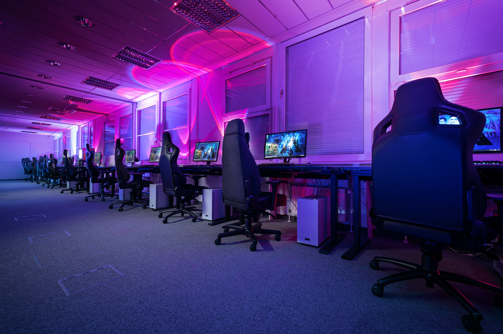

Home

Welcome!
Hello, welcome to the world of esports! I hope you enojoy your time and come to learn and love esports like I do!
What is an Esport?
- Esports refers to the competeitive scene in gaming. Its similar to the NFL or NBA with leagues of all types of games and in many different countries.
- Many modern games today easily create competitive scenes although they could die out fast. Unlinke the NFL or NBA many competitive scenes aren't sponsored by big companies but rather are supported by their communities.
- This makes esports heavily community based and not main stream. However, many esports have started to break that mold and has been gathering a lot of viewership and sponsors from outside companies.
Why esports is amazing!
Esports are heavily community based and once you join a scene you will find hundreds of people talking about the games whether it be an online forum, community group, or social media. Like soccor or baseball there are hundreds of teams around the world that you can root for. Watching players play a game you love at the highest level is bound to make anyone happy. With players having their platform mainly be a computer it allows for teams to connect more with their fans by streaming live on platforms like twitch.
Esports allows you to easily connect with the players and organizations that run the tournaments. Givng a great way to connect with the game you love more and also allows you to grow with the community while directly choosing what happens. Theres nothing better than seeing a scene you are apart of grow into the mainstream.
About Me

Background:
I started following esports when I was 13 years old. My first esports scene was Counter-Strike: Global Offensive and I stayed in that scene for around 3 years following my favorite team Cloud 9. Seeing them come close to winning many majors. After watching this scene for a few years it got me hooked on esports and made me understand peoples love for events like the Super Bowl.
Today I mainly follow 2 esport scenes being League of Legends and Apex Legends. Throughout the years I find it amazing how no matter the genere the game is there is a sense of unity in all communities. Every competitive scene in esports know of each other and understand most rules or mechanics within a game even if they haven't played it much.
I made this website to apperciate scenes that I had been apart of and scenes I am apart of. I have many friends that also enjoy these tournaments and often its hard to follow which tournaments are big for other games. Often esports have many small tournaments and then a major one at the end of the season like most sports. However, often these end of season tournaments involve the best teams from every region around the world. Making esports even more exiciting to root for your region and see how amazing other regions are at the game as well. This is why I love esports and it community.
Tournaments
Major Tournaments:
These are major tournaments for popular esport scenes to look out for (click tournaments for more info):
- Counter-Strike: Global Offensive: Dreamhack and Katowice
- League of Legends: League of Legends World Championship
- Apex Legends: Apex Legends Global Series League
- Valorant: Valorant Champions Tour
Esport Organizations
Esport Orgs:
These are some esport organizations from the main regions (Click on names to get more info):
North America
Europe
Asia
Popular Esport Games

These are some popular esport games:
- League Of Legends
- Apex Legends
- Valorant
- Fortnite
- Counter-Strike: Global Offensive
- Dota 2
- Super Smash Bros. Melee
Esports Importance
Esports Cultural Importance:
Esports in my opinion has become one of the biggest sports to incorporate the public. Becoming a pro in esports doesn't require years upon years of training to gather the knowledge and skills to match those that are already in the pro scene. Anyone can essentially become a pro if they grab onto opportunities. However, that also means that pros are easily replaced but if you stay in a scene long enough you will forever be remembered and engraved into the games you play. Many players cemented themselves in the game so much that the developers themselves put monuments in the game for the players.
Its beautiful how intergrated the community is with the game and organizations of the pro scene. It is continuing to pave a path to create more intimate relationships between the sport and its people. Esports a great scene that continues to grow while still thinking of its audience.